d1 <- ts.union( ldeaths, mdeaths)
head(d1) ldeaths mdeaths
Jan 1974 3035 2134
Feb 1974 2552 1863
Mar 1974 2704 1877
Apr 1974 2554 1877
May 1974 2014 1492
Jun 1974 1655 1249ts.union e ts.intersectAnteriormente, apresentamos a série de mortes por doenças pulmonares no Reino Unido disponível no R (ldeaths). Além desta série, o pacote datasets possui as séries mdeaths e fdeaths, que representam as mortes para os sexos masculino e feminino, respectivamente. Ambas são séries mensais, começando em janeiro de 1974 e terminando em dezembro de 1979.
Desde que dois objetos ts tenham o mesmo argumento frequency, é possível organizá-los em uma matriz de séries temporais múltiplas, com cada linha representando o mesmo momento na linha do tempo. Para tanto, utilizamos a função ts.union. Ilustramos isso com as duas novas séries apresentadas.
d1 <- ts.union( ldeaths, mdeaths)
head(d1) ldeaths mdeaths
Jan 1974 3035 2134
Feb 1974 2552 1863
Mar 1974 2704 1877
Apr 1974 2554 1877
May 1974 2014 1492
Jun 1974 1655 1249Observe que é possível construir a matriz de séries temporais múltiplas mesmo que os tempos de início ou fim sejam diferentes entre as séries - nesse caso, NAs serão gerados quando não houver registros. Veja o exemplo abaixo, no qual o primeiro mês da série mdeaths foi removido
# remoção do primeiro mês
mdeaths2 <- window(mdeaths, start = c(1974,2))
# criação do data.frame
d2 <- ts.union( ldeaths, mdeaths2)
head(d2) ldeaths mdeaths2
Jan 1974 3035 NA
Feb 1974 2552 1863
Mar 1974 2704 1877
Apr 1974 2554 1877
May 1974 2014 1492
Jun 1974 1655 1249De modo análogo, podemos construir uma matriz de séries temporais múltiplas que apresenta um subconjunto das séries que corresponde à interseção dos períodos registrados, utilizando a função ts.intersect
# recorte da série mdeaths entre fev/1974 e mai/1974
mdeaths3 <- window(mdeaths, start = c(1974,2), end = c(1974,5))
# data.frame somente com os tempos que existem entre as duas séries
d3 <- ts.intersect( ldeaths, mdeaths3 )
d3 ldeaths mdeaths3
Feb 1974 2552 1863
Mar 1974 2704 1877
Apr 1974 2554 1877
May 1974 2014 1492Sejam \(\{x_t\}\) \(\{y_t\}\) duas séries temporais. A função de covariância cruzada é dada por
\[\gamma_{XY}(r,s)=\text{Cov}(X_r,Y_s).\]
Dizemos que as séries \(\{x_t,y_t\}\) são conjuntamente estacionárias quando elas são estacionárias e sua covariância cruzada é função somente da diferença \(h=r-s\). Nesse caso, escrevemos a covariância cruzada como
\[\gamma_{XY}(h)=\text{Cov}(X_{t+h},Y_t).\]
Observe que a função de covariância assimétrica, uma vez que
\[\gamma_{XY}(h)\neq \gamma_{XX}(-h).\] Além disso, a função de autocovariância de \(X\) é dada por \(\gamma_X(h)=\gamma_{XY}(h)\).
Para duas séries temporais \(\{x_t,y_t\}\) conjuntamente estacionárias, a função de correlação cruzada é definida por \[\rho_{XY}(h)=\frac{\gamma_{XY}(h)}{\sqrt{\gamma_X(0)\gamma_Y(0)}}.\]
Example 13.1 Considere que
\[y_t = \beta_0+\beta_1 x_{t-d}+\varepsilon_t,\] onde \(\varepsilon_t\) é um ruído branco com variância \(\nu\) e \(\{x_t\}\) é uma sequência de variáveis aleatórias independentes com distribuição Normal(0,\(\sigma^2_X)\). Além disso, \(\{x_t\}\) e \(\{\varepsilon_t\}\) são independentes entre si. Observe que \(\{x_t\}\) já é estacionária. Para a série \(\{y_t\}\), temos
\[\begin{align} E(y_t)&=E(\beta_0+\beta_1x_{t-d}+\varepsilon_t)=\beta_0\\ Var(y_t)&=\beta_1^2Var(x_{t-d})+Var(\varepsilon_t)=\beta_1^2\sigma^2_X+\nu. \end{align}\] e \[\begin{align} \text{Cov}(y_t,y_{t+h})=\text{Cov}(\beta_1 x_{t-d}+\varepsilon_{t},\beta_1 x_{t-d+h}+\varepsilon_{t+h})=0 \end{align}\] para $h $. Portanto \(\{y_t\}\) também é estacionária. Observe que
\[\begin{align} \text{Cov}(x_{t+h},y_{t})&=\text{Cov}(x_{t+h},\beta_0+\beta_1x_{t-d}+\varepsilon_{t})\\&=\beta_1Cov(x_{t+h},x_{t-d})=\left\{\begin{array}{ll}\beta_1\sigma_X^2,&\hbox{se }h=-d,\\0,&\hbox{caso contrário}\end{array}\right. \end{align}\] logo, \[\rho_{XY}(h)=\begin{cases}\frac{\beta_1\sigma_X}{\sqrt{\beta_1^2\sigma_X^2+\nu}},&\hbox{ se }h=-d,\\0,&\hbox{caso contrário}\end{cases}\]
A partir do exemplo anterior, podemos notar que a função de correlação cruzada de duas séries temporais conjuntamente estacionárias pode ser utilizada para determinar o quão defasada está um série em relação à outra.
Na prática, precisamos estimar a função de correlação cruzada. Para duas séries \(x_t\) e \(y_t\) observadas, de tamanho \(n\), tal função é estimada por
\[r_{xy}(h)=\frac{\sum_{t=\max\{1,1-h\}}^{\min\{n,n-h\}} (x_{t+h}-\bar{x}_n)(y_{t}-\bar{y}_n)}{\sqrt{\sum_{t=1}^n(x_t-\bar{x}_n)^2}\sqrt{\sum_{t=1}^n(y_t-\bar{y}_n)^2}}\] e, desde que as duas séries sejam conjuntamente estacionárias, \(r_{xy}(h)\) significativamente diferente de zero indica uma associação linear defasada. Como \(r_{xy}(h)\) não é simétrica, existem as seguintes situações:
Se \(r_{xy}(h)\) é significativa com \(h \gt 0\), o comportamento de \(y\) no instante \(t\) antecede o de \(x\) em \(h\) unidades de tempo
Se \(r_{xy}(h)\) é significativa com \(h \lt 0\), éa série \(x\) que antecede \(y\) em \(|h|\) unidades de tempo.
Contudo, a correlação cruzada falha quando as séries não são conjuntamente estacionárias, gerando um fenômeno conhecido como correlação espúria.
Example 13.2 Como exemplo de correlação espúria, considere a produção mensal de leite e a produção de energia elétrica (em escala logarítmica) nos EUA entre janeiro de 1994 e dezembro de 2006. Ambas as séries apresentam tendência e sazonalidade.
require(TSA)Carregando pacotes exigidos: TSA
Anexando pacote: 'TSA'Os seguintes objetos são mascarados por 'package:stats':
acf, arimaO seguinte objeto é mascarado por 'package:utils':
tardata(milk); data(electricity)
leiteLogEle <- ts.intersect(milk, log(electricity))
plot(leiteLogEle)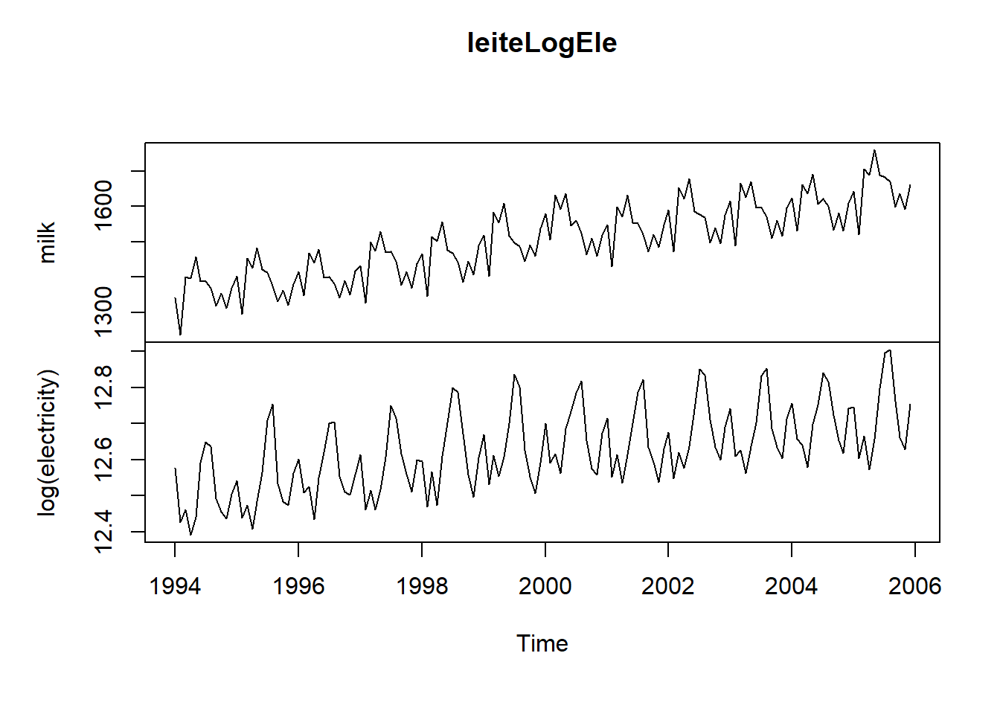
Abaixo, apresentamos a correlação cruzada (ccf). Note como há várias correlações significativas, quando comparadas com o limiar 1,96/\(\sqrt{n}\). Embora os gráficos apresentem uma tendência crescente e padrão sazonal de período 12, não há justificativa plausível de causalidade entre as séries. Deste modo, os picos observados na ccf são gerados pelo fato de ambas compartilharem uma tendência crescente e um padrão sazonal de período 12.
ccf( leiteLogEle[,1] , leiteLogEle[,2] ) 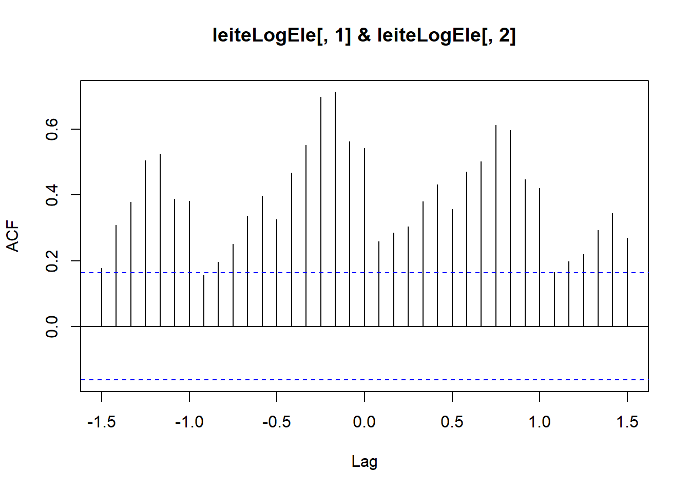
Considere o modelo dado por
\[y_t = \sum_{j=-\infty}^\infty \beta_j x_{t-j} + z_t,\] onde \(\{z_t\}\) é um processo ARIMA independente de \(\{x_t\}\). Se \(\{x_t\}\) e \(\{y_t\}\) são estacionários e independentes entre si, a variância assintótica de \(r_{xy}(h)\) é aproximadamente
\[\text{Var}\big(r_{xy}(h)\big) \approx \frac{1}{n}\left[1 + 2\sum_{k=1}^\infty \rho_X(k)\rho_Y(k)\right],\] onde \(\rho_X(k)\) e \(\rho_Y(k)\) são as funções de autocorrelação de \(\{x_t\}\) e \(\{y_t\}\), respectivamente.
Note que, se pelo menos um dos processos for um ruído branco, todas as autocorrelações para \(k \ge 1\) se anulam e a variância reduz-se a aproximadamente \(1/n\). Suponha então que \(\{x_t\}\) é um processo ARIMA,
\[\phi(B)(1-B)^d x_t = \theta(B)\varepsilon_t,\] onde \(\{\varepsilon_t\} \sim \text{rb}(0, \nu)\). Assumindo que o processo é inversível, podemos escrever \(\pi(B)x_t = \varepsilon_t\), em que o operador \[\pi(B) = \theta(B)^{-1}\phi(B)(1-B)^d\] converte a série \(\{x_t\}\) em um ruído branco. A aplicação do filtro \(\pi(B)\) em \(x_t\) para obter um ruído branco é denominada whitening ou prewhitening. Aplicando o mesmo filtro \(\pi(B)\) a ambos os lados do modelo apresentado no início desta seção, obtemos
\[\pi(B)y_t = \sum_{j=-\infty}^\infty \beta_j \big[\pi(B)x_{t-j}\big] + \pi(B)z_t.\]
Definindo as séries filtradas \(\tilde{x}_t = \pi(B)x_t = \varepsilon_t\), \(\tilde{y}_t = \pi(B)y_t\) e \(\tilde{z}_t = \pi(B)z_t\) (e assumindo que \(\tilde{y}_t\) resultante é estacionária), temos que \(\tilde{x}_t\) é independente de \(\tilde{z}_t\). Como \(\{\tilde{x}_t\}\) é um ruído branco, a função de correlação cruzada entre \(\tilde{x}_t\) e \(\tilde{y}_t\) reduz-se a:
\[\rho_{\tilde{X}\tilde{Y}}(h) = \beta_{-h}\sqrt{\frac{\text{Var}\big(\pi(B)x_t\big)}{\text{Var}\big(\pi(B)y_t\big)}},\] ou seja, a correlação cruzada das séries após o prewhitening é diretamente proporcional a \(\beta_{-h}\) (em particular, se \(y_t\) depende apenas de valores presentes e passados de \(x_t\), os picos surgirão em \(h \le 0\)). Além disso, como \(\{\tilde{x}_t\}\) é ruído branco, sob a hipótese nula \(H_0\) de independência entre as séries podemos testar a significância de cada defasagem comparando \(|r_{\tilde{x}\tilde{y}}(h)|\) com o limiar usual \(1,96/\sqrt{n}\).
Example 13.3 Considere novamente as séries mensais de produção de leite e logaritmo da produção de energia elétrica vistas na seção anterior. Ambas possuem tendência e sazonalidade, que podem ser removidas inicialmente com diferenças ordinária e sazonal para obter séries estacionárias:
estacionario <- ts.intersect(
leite = diff(diff(milk, 12)),
eletricidade = diff(diff(log(electricity), 12))
)Como as séries diferenciadas ainda podem preservar estrutura de autocorrelação, aplicamos o procedimento de prewhitening antes de avaliar a função de correlação cruzada. A função prewhiten do pacote TSA ajusta um modelo autorregressivo à primeira série (selecionado via AIC) e aplica o mesmo filtro linear a ambas as séries antes de calcular a correlação cruzada amostral
prewhiten(
as.vector(estacionario[, 1]),
as.vector(estacionario[, 2]),
ylab = "CCF"
)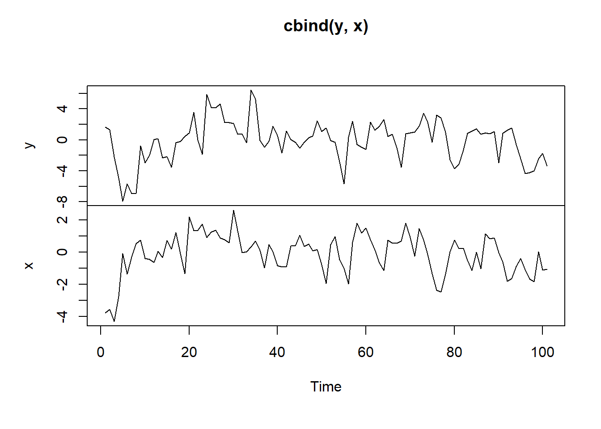
Note que o padrão de correlações espúrias desapareceu, com exceção de uma oscilação marginal na defasagem \(-3\), que é compatível com o número esperado de falsos positivos ao testar dezenas de defasagens simultaneamente ao nível de 5%). Portanto, não há evidência de associação linear entre as duas séries.
Example 13.4 O BOVA11 é um fundo que imita do Índice BOVESPA, que por sua vez é composto pelas empresas com maior volume de negociação na Bolsa de Valores de São Paulo. Abaixo, apresentamos o preço de fechamento mensal na escala logaritmica.
url <- 'https://drive.google.com/uc?authuser=0&id=1d1dp1q7_Jdp8yOMlcsLxdZZcCMmwjZ04&export=download'
dados <- read.csv(url)
dados$Data <- as.Date(dados$Data, '%d.%m.%Y')
dados0 <- dados[order(dados$Data),]
dados0$IPCA[141] <- 3.1352
bova11 <- ts(log(dados0$Último), frequency=12, start=c(2009,1))
bova11 <- window(bova11, end = c(2019,12))
plot.ts( bova11, lwd = 2)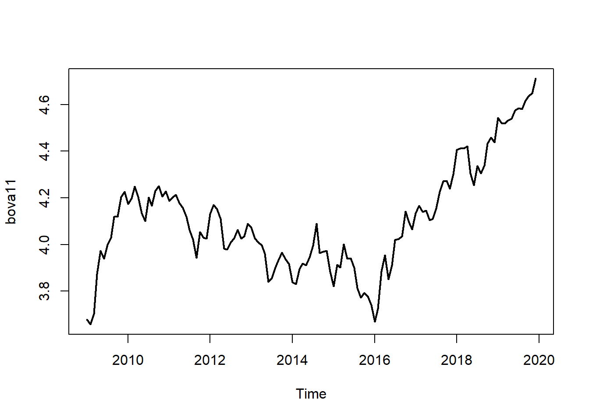
Pessoas vendem as ações para obter lucro (vender por um valor maior do que comprou) ou por acreditar que o valor de mercado da empresa vai diminuir. Entretanto, não é apenas o desempenho da empresa que determina o valor da ação, mas a dinâmica do mercado, que tenta se antecipar a possíveis perdas. Se muitas pessoas vendem suas ações, o preço cai. Mas se muitas pessoas querem comprar, o preço sobe. Esse movimento é explicado pela Lei da Oferta e da Procura.
O pessimismo da economia tende a diminuir o ânimo dos investidores, fazendo com que eles se desfaçam de suas ações antes que elas desvalorizem mais.
Um indicador importante da econômia é o IPCA (Índice Nacional de Preços ao Consumidor Amplo), nosso principal índice de inflação. Abaixo, mostramos a série do IPCA, acumulado em 12 meses
ipca <- ts(as.numeric(dados0$IPCA), frequency=12, start=c(2009,1))
ipca <- window(ipca, end = c(2019,12))
plot.ts(ipca, lwd = 2)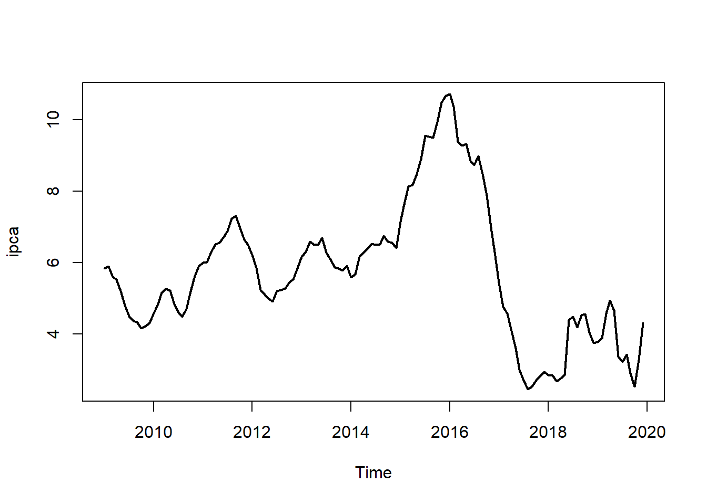
Quando a inflaçãoo está alta, o Banco Central aumenta os juros e existe um movimento de saída da bolsa para os papéis do tesouro, fazendo com que o índice BOVESPA caia, e, por consequência, o BOVA11
Portanto, é esperado uma relação negativa entre a série do IPCA com o BOVA11. Abaixo, apresentamos a correlação cruzada (espúria).
series <- ts.union(bova11,ipca)
plot( series)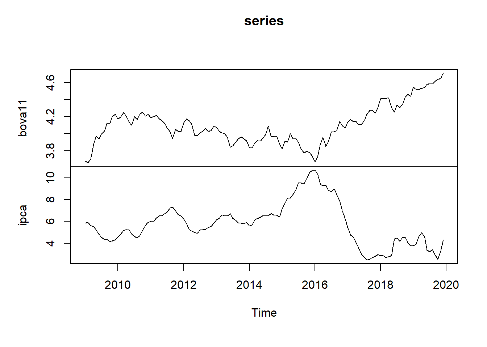
ccf(bova11, ipca)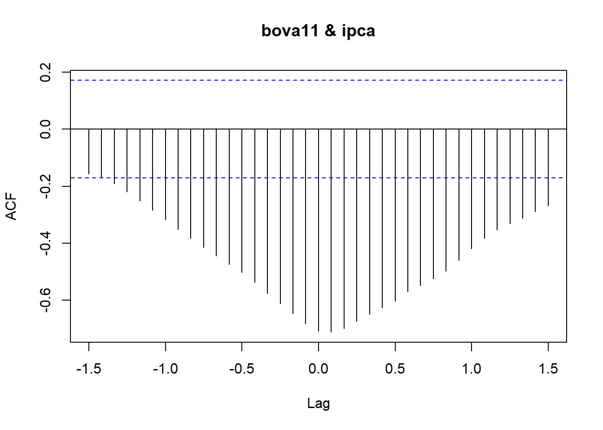
Vamos diferenciar as séries e aplicar o prewhiten.
dipca <- diff(ipca)
dbova11 <- diff(bova11)
prewhiten(dipca ,dbova11)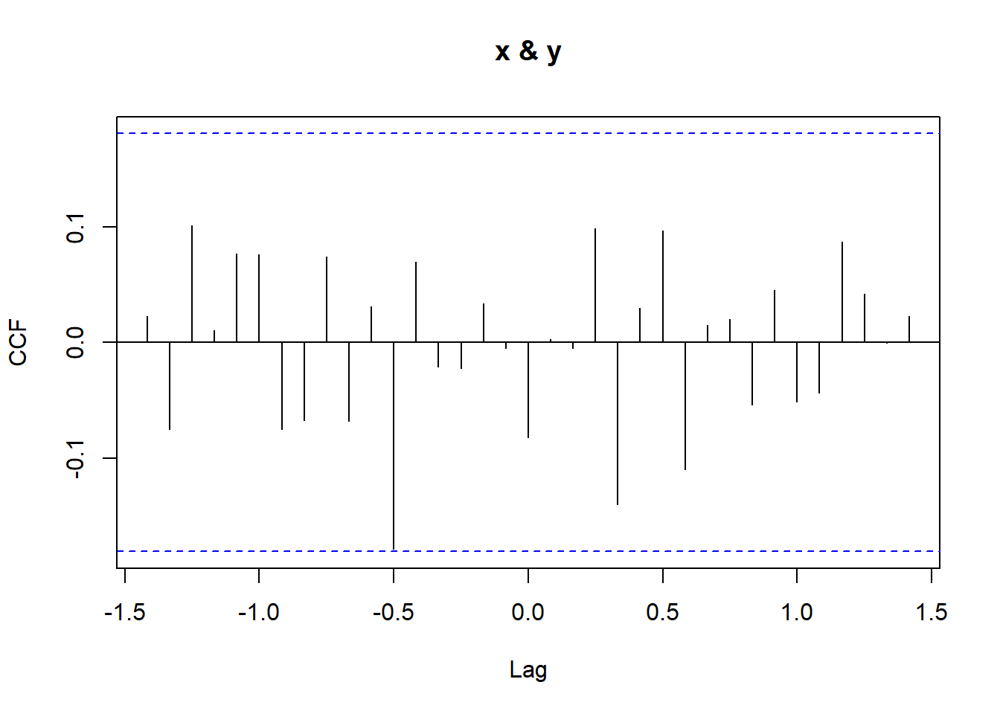
Após a diferenciação e o prewhitening, o padrão intenso de correlações observado inicialmente desaparece: nenhuma defasagem ultrapassa claramente as bandas de confiança de 95%, restando apenas um sinal negativo limítrofe (que apenas toca o limite inferior de confiança, em torno da defasagem de 6 meses). Esse comportamento limítrofe mostra que, embora exista uma intuição econômica sólida para que altas na inflação levem ao aumento dos juros e à consequente migração de recursos da bolsa para títulos públicos, o gráfico mostra que esse movimento não é forte o suficiente para ditar, sozinho, a dinâmica mensal entre o IPCA e o BOVA11.
Retomando o modelo da seção anterior, sejam \(\{x_t\}\) e \(\{y_t\}\) duas séries temporais relacionadas por \[y_t = \sum_{j=-\infty}^\infty \beta_j x_{t-j} + z_t,\] onde \(\{z_t\}\) segue um processo ARIMA independente de \(\{x_t\}\). Na prática, apenas um conjunto finito de coeficientes \(\beta_j\) é diferente de zero. Supondo que \(\{x_t\}\) (após eventual diferenciação) seja estacionária e possua representação \(\text{AR}(\infty)\) dada por \(\pi(B)x_t = \dot{x}_t\), onde \(\{\dot{x}_t\}\) é um ruído branco, definimos também \(\dot{y}_t = \pi(B)y_t\) e \(\dot{z}_t = \pi(B)z_t\). Aplicando o filtro \(\pi(B)\) ao modelo acima, obtemos \[\dot{y}_t = \sum_{j=-\infty}^\infty \beta_j \dot{x}_{t-j} + \dot{z}_t.\] Como \(\{\dot{x}_t\}\) é ruído branco e independente de \(\{\dot{z}_t\}\), vimos que a função de correlação cruzada entre \(\dot{x}_t\) e \(\dot{y}_t\) na defasagem \(h\) é igual a \(\beta_{-h}\,\sigma_{\dot{X}}/\sigma_{\dot{Y}}\). Abaixo, segue um roteiro para identificação e estimação desse modelo.
Se necessário, remova eventuais tendências e sazonalidades de \(x_t\) e de \(y_t\), aplicando os operadores diferença adequados (quando o mesmo operador \(\\Delta^d\) é aplicado a ambos os lados da equação, os coeficientes \(\beta_j\) permanecem preservados.)
Encontre uma aproximação \(\text{AR}(p)\) para a série \(x_t\) (já estacionarizada) — minimizando o critério AIC, por exemplo — e estime o operador \(\pi(B)\).
Obtenha as séries filtradas \(\dot{x}_t = \pi(B)x_t\) e \(\dot{y}_t = \pi(B)y_t\).
Estime a função de correlação cruzada entre \(\dot{x}_t\) e \(\dot{y}_t\) e determine o conjunto \(\\mathcal{K}\) das defasagens relevantes (recordando que, nessa ordem, um pico significativo na defasagem \(h\) corresponde ao regressor \(x_{t-j}\) com \(j = -h \in \mathcal{K}\)).
Alinhando as séries nas datas em que todos os regressores estão disponíveis, obtenha estimativas iniciais para \((\beta_j)_{j \in \mathcal{K}}\) (incluindo um intercepto \(\beta_0\), se aplicável) minimizando a soma de quadrados dos erros \[\sum_{t} z_t^2 = \sum_{t} \left(y_t - \sum_{j \in \mathcal{K}} \beta_j x_{t-j}\right)^2.\]
Calcule a série de resíduos preliminares \[\hat{z}_t = y_t - \sum_{j \in \mathcal{K}} \hat{\beta}_j x_{t-j}\] e identifique a ordem \((p, d, q)\) de um modelo ARIMA adequado para \(\{z_t\}\) (por meio da ACF, PACF e critérios de informação).
Encontre os estimadores de máxima verossimilhança para o modelo completo \[y_t = \sum_{j \in \mathcal{K}} \beta_j x_{t-j} + z_t,\] assumindo que \(\{z_t\}\) segue o modelo ARIMA com a ordem determinada no passo anterior, e realize a análise diagnóstica dos resíduos finais.
Vamos simular um processo do seguinte modelo:
\[y_t = 2x_{t-4}+z_t,\] onde \(x_t\) é um processo AR(1) com \(\phi=.8\) e \(z_t\) um ARMA(1,1) com \(\phi=.2\) e \(\theta=.5\).
set.seed(123)
z <- arima.sim( list( ar = .2, ma = .5), 104)
x <- arima.sim( list(ar = .8, ma = 0), 104)
x <- ts(x, start = 1); z <- ts(z, start=1)
y <- NULL
for(t in 5:104) y[t] <- 2*x[t-4] + z[t]
x <- ts(x[5:104])
y <- ts(y[-(1:4)])
plot.ts( cbind(y,x))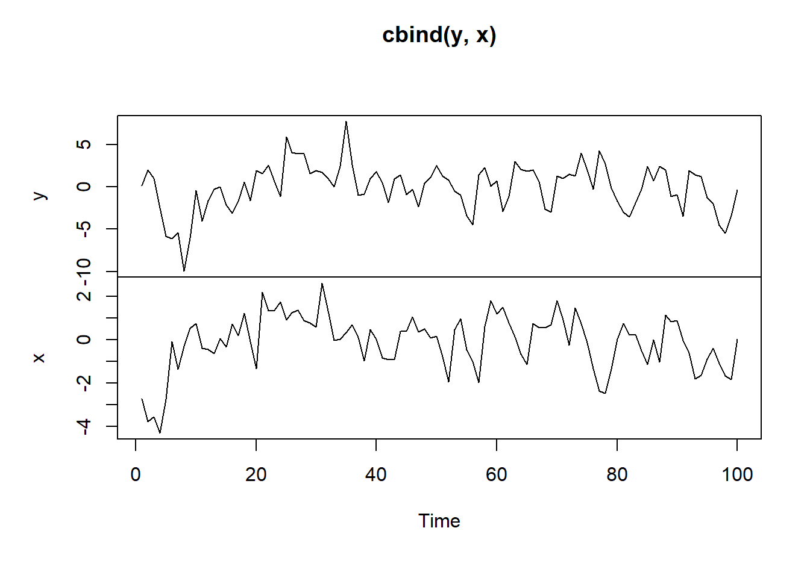
Observe abaixo que a correlação cruzada apresenta a defasagem -4 significativa em conjunto com várias outras, que são espúrias.
ccf(x,y)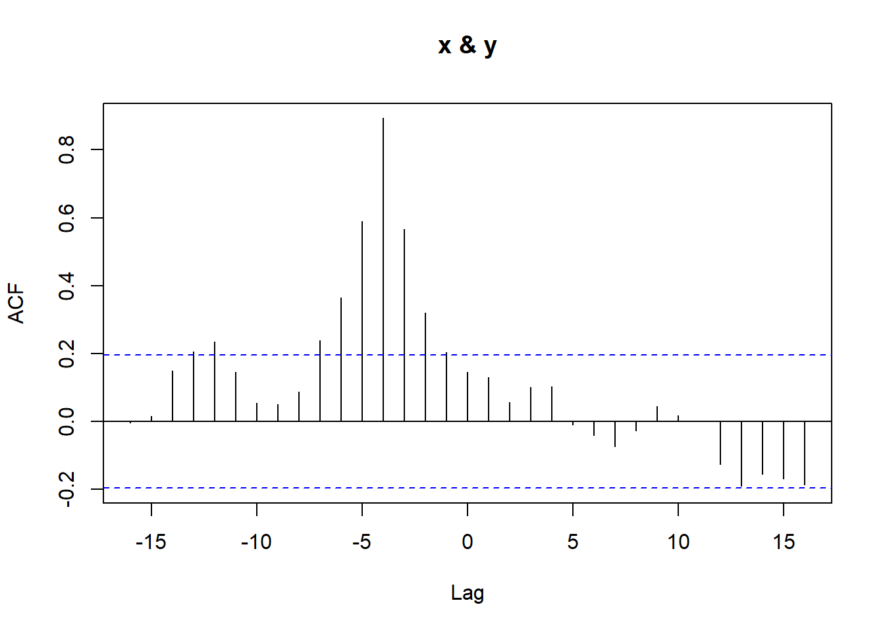
As séries \(x_t\) e \(y_t\) já parecem ser estacionárias. Abaixo, aplicamos o whitening e as correlações espúrias desapareceram. Temos evidências de que apenas \(\beta_{4}\) é relevante.
require(TSA)
prewhiten(x,y)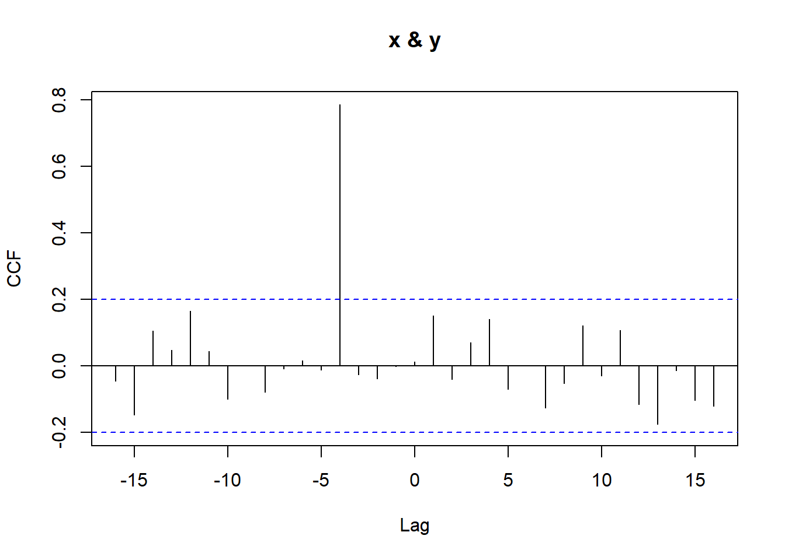
Vamos ajustar o modelo de regressão \[y_t=\beta_{4}x_{t-4}+z_t\] e obter o AIC e seus resíduos.
mod <- lm( y[5:100] ~ x[1:96] -1)
AIC(mod)[1] 296.465resReg <- residuals(mod)Vamos analisar os resíduos obtibos para determinar o modelo de \(z_t\). Abaixo, vemos indícios para o modelo ARMA(1,1).
acf(resReg)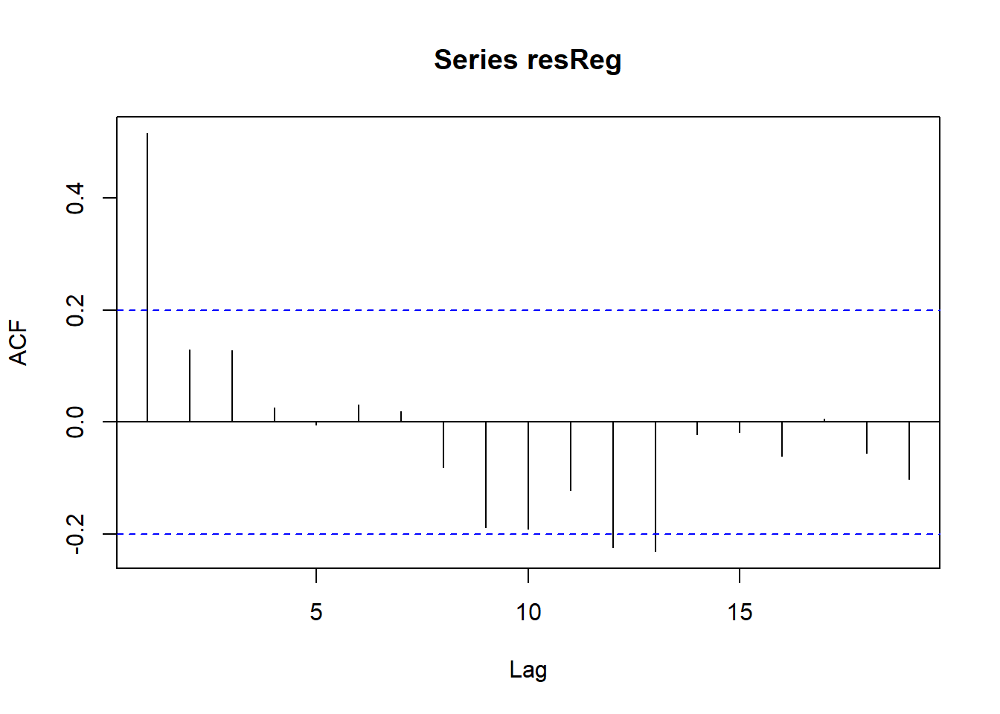
pacf(resReg)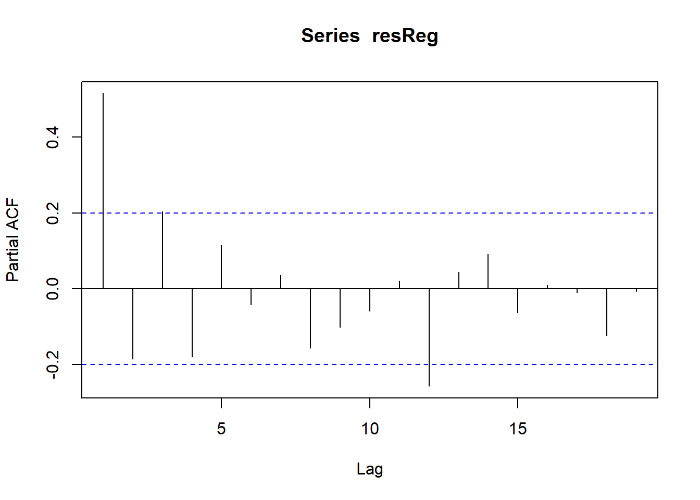
Ajustamos o modelo de regressão para séries temporais abaixo, com \(\hat{\beta}_4=1,94\).
modFinal <- arima(y[5:100] , order = c(1,0,1), xreg = x[1:96] , include.mean = FALSE)
modFinal
Call:
arima(x = y[5:100], order = c(1, 0, 1), xreg = x[1:96], include.mean = FALSE)
Coefficients:
ar1 ma1 xreg
-0.0150 0.7540 2.0392
s.e. 0.1576 0.1198 0.0887
sigma^2 estimated as 0.7935: log likelihood = -125.53, aic = 257.05Para validar o ajuste final, verificamos se os resíduos do modelo completo se comportam como ruído branco:
acf(modFinal$residuals, main = "ACF dos resíduos finais")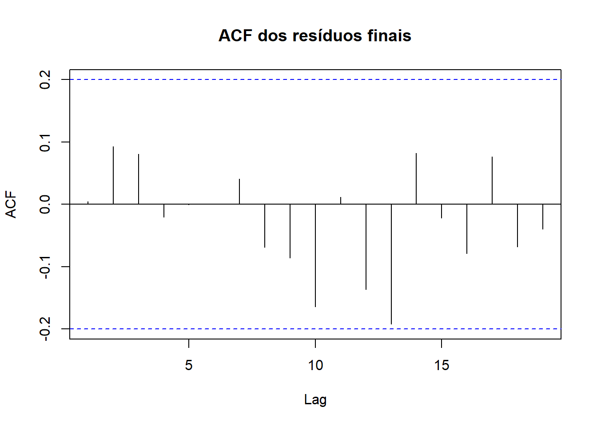
Box.test(modFinal$residuals, lag = 10, type = "Ljung-Box")
Box-Ljung test
data: modFinal$residuals
X-squared = 5.9911, df = 10, p-value = 0.816